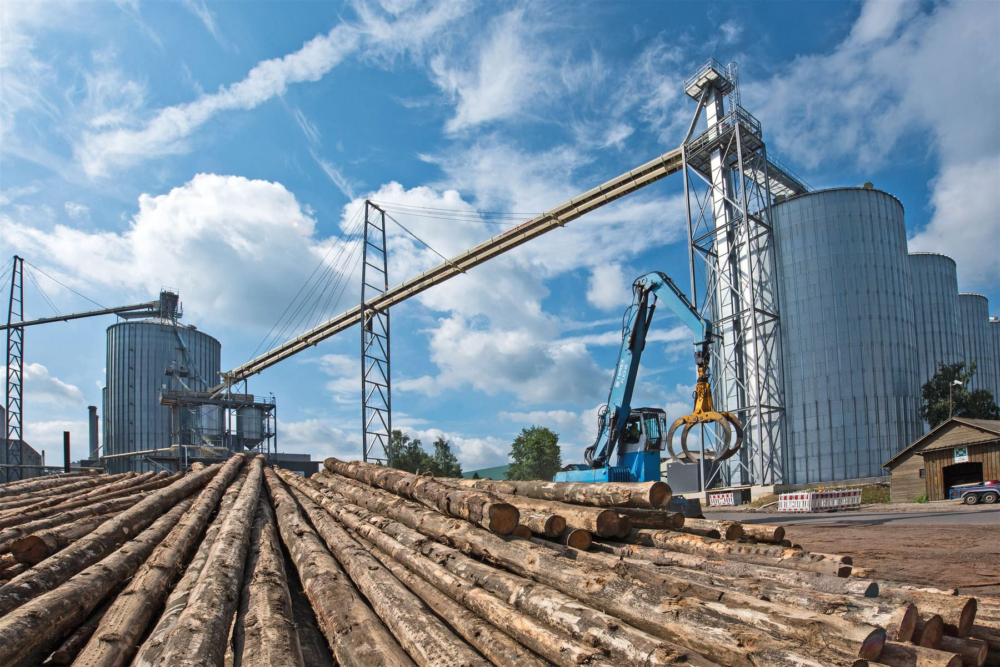
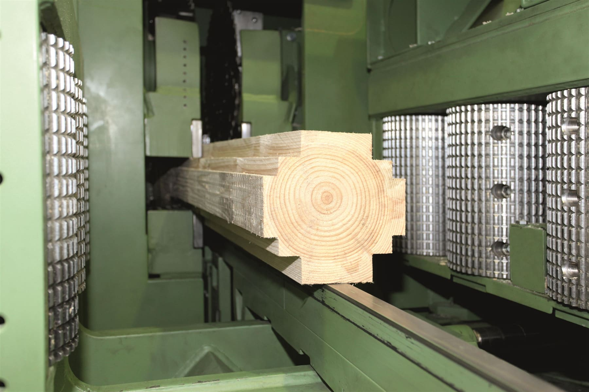
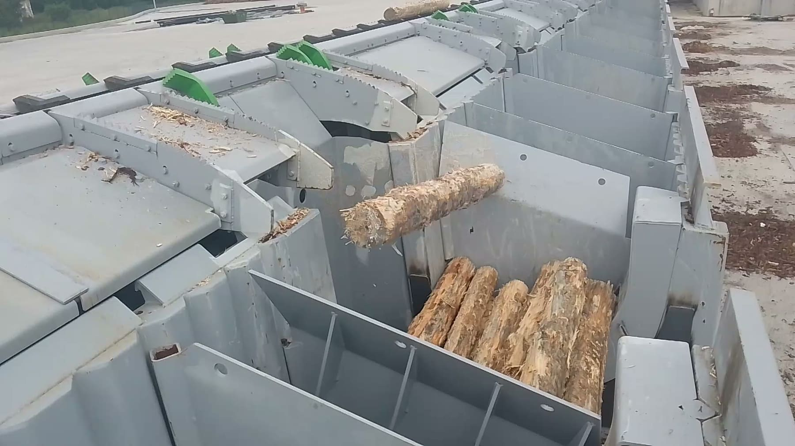
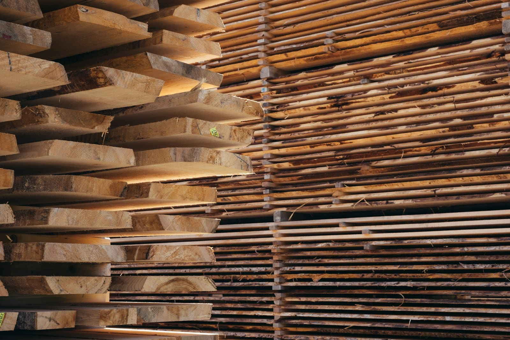

Les étapes de la ligne
De la grume au colis, sans rupture.
Chaque étape est pensée en fonction de celle qui la précède et de celle qui la suit, pour une ligne fluide plutôt qu'une somme de machines. Cliquez pour explorer chaque étape.
01
Parc à grumes
Réception, tri par essence et diamètre, stockage et arrosage des bois ronds à l'arrivée des camions. Le dimensionnement du parc conditionne la fluidité de toute la ligne en aval.
02
Lignes de sciage
Débit des grumes en plots et avivés sur ligne automatisée, du scanner de bille à la scie de tête puis aux scies de reprise, pour maximiser le rendement matière.
03
Triage & empilage
Classement automatisé des sciages par dimension et qualité, puis empilage robotisé pour préparer un séchage homogène.
04
Séchoirs & étuves
Séchoirs, étuves et sécheurs sous-vide dimensionnés selon l'essence et l'usage final, pour un taux d'humidité maîtrisé et reproductible.
05
Rabotage & lamellé-collé
Calibrage, finition et lignes de lamellé-collé pour livrer un produit fini aux tolérances dimensionnelles strictes, prêt à être conditionné.





André Technologies — équipement associé